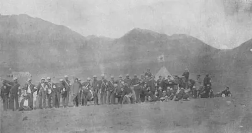

Inicio de la Guerra del Pacífico

La Guerra del Pacífico (1879–1884) enfrentó a Chile con Perú y Bolivia. Su origen está en el litoral boliviano, donde capitales chilenos y británicos explotaban el salitre. El Tratado de 1874 fijó la frontera chileno-boliviana en el paralelo 24° S y comprometió a Bolivia a no subir por 25 años los impuestos a personas, industrias y capitales chilenos en la zona. En 1878, el gobierno de Hilarión Daza impuso un tributo de 10 centavos por quintal de salitre exportado a la Compañía de Salitres y Ferrocarril de Antofagasta. Chile lo consideró una violación del tratado. Ante la negativa de la empresa, Bolivia ordenó rematar sus bienes el 14 de febrero de 1879, día en que tropas chilenas ocuparon Antofagasta. Perú, aliado de Bolivia por un tratado defensivo secreto de 1873, intentó mediar sin éxito, y el 5 de abril Chile declaró la guerra a ambos países.
Con hitos como el Combate Naval de Iquique y la Toma del Morro de Arica, el conflicto concluyó con el Tratado de Ancón (1883) con Perú y el Pacto de Tregua (1884) con Bolivia; el Tratado de 1904 cedió a Chile el litoral boliviano. La historiografía boliviana sostiene que el impuesto era legítimo y ve la ocupación como una agresión; la pérdida del acceso soberano al mar es central en su memoria nacional. En Perú se destaca el expansionismo chileno ligado al salitre.
Versión para niños
En el Desierto de Atacama había salitre, un mineral muy valioso. En Antofagasta, que entonces era parte de Bolivia, una empresa con dueños chilenos y británicos lo extraía. En 1878 Bolivia le cobró un nuevo impuesto, pero Chile reclamó que un tratado de 1874 lo prohibía. Como la empresa no pagó, Bolivia decidió rematar sus bienes. El 14 de febrero de 1879, soldados chilenos desembarcaron en Antofagasta. Así comenzó la Guerra del Pacífico, en la que Chile se enfrentó a Bolivia y Perú.
Para maestros
Nivel sugerido: 1° medio
Objetivo: Explicar las causas de la Guerra del Pacífico, distinguiendo factores económicos, diplomáticos y políticos, y reconocer cómo la recuerdan Chile, Perú y Bolivia.
Preguntas para la clase:
- ¿Por qué un impuesto de 10 centavos por quintal pudo desencadenar una guerra?
- ¿Qué establecía el Tratado de 1874 y por qué Chile y Bolivia lo interpretaron de forma distinta?
- ¿Cómo se recuerda esta guerra en Bolivia y en Perú, y por qué esa memoria es diferente de la chilena?
Actividad (20–30 min): En tres grupos (Chile, Perú y Bolivia), los estudiantes leen textos breves entregados por el docente sobre cómo cada país explica el inicio de la guerra y completan un cuadro comparativo de causas y consecuencias. Para cerrar, se ordenan en una línea de tiempo el Tratado de Ancón (1883), el Pacto de Tregua (1884), el Tratado de 1904 y el Tratado de Lima (1929), y se comenta que en 2018 la Corte Internacional de Justicia resolvió que Chile no estaba obligado a negociar una salida soberana al mar con Bolivia.
Fuentes sugeridas: Memoria Chilena; Biblioteca Nacional Digital; Museo Histórico Nacional; Biblioteca del Congreso Nacional (BCN).
Objetivos de Aprendizaje (Currículum Nacional)
- 6° básico · HI06 OA 05 Describir cómo se conformó el territorio de Chile durante el siglo XIX … la Guerra del Pacífico y diversos conflictos bélicos
- 6° básico · HI06 OA 06 Caracterizar los principales aspectos que definieron el período de riqueza aportada por la explotación del salitre … el inicio de la "cuestión social"
- 1° medio · HI1M OA 15 Analizar la guerra del Pacífico considerando el conflicto económico en torno al salitre, el impacto de la guerra en múltiples ámbitos de la sociedad chilena
Revisión humana pendiente. Cómo se revisa · Reportar un error
Cómo citar: Historia de Chile. (2026). Inicio de la Guerra del Pacífico. En Historia de Chile: atlas y línea de tiempo. https://moises-salgado.github.io/historia-de-chile/momento/inicio-de-la-guerra-del-pacifico.html